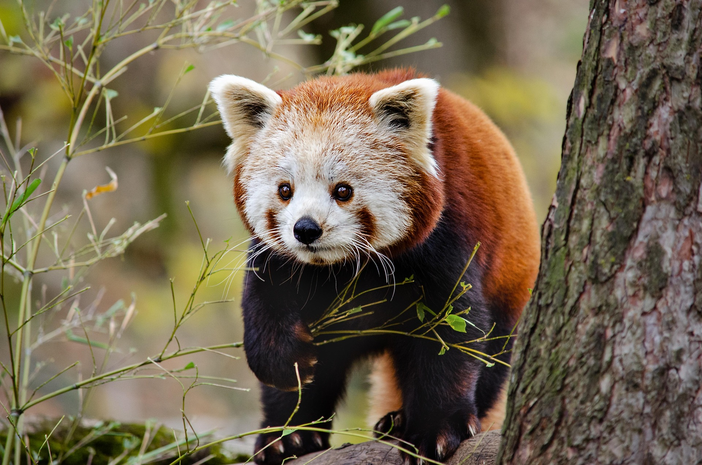

Roter Panda
Gefährdete Art des Himalaya
Der Rote Panda ist ein charmanter Waldbewohner, der in dichten Bambuswäldern lebt und vor allem durch Lebensraumverlust bedroht ist.
Verbreitung: Nepal, Bhutan, China
Nahrung: 99 % Bambus, ergänzt durch Früchte und Insekten
Status: Gefährdet (Vulnerable)